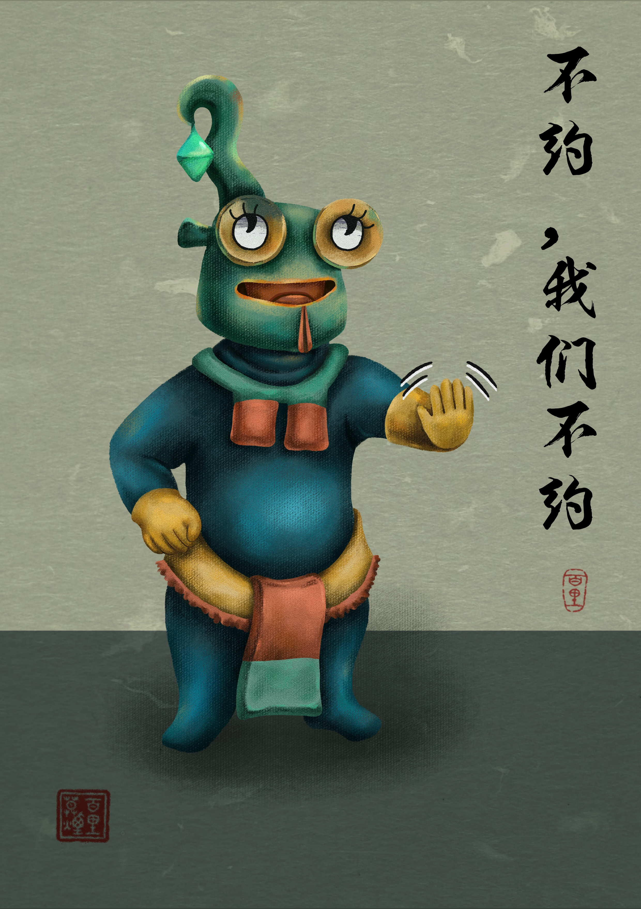
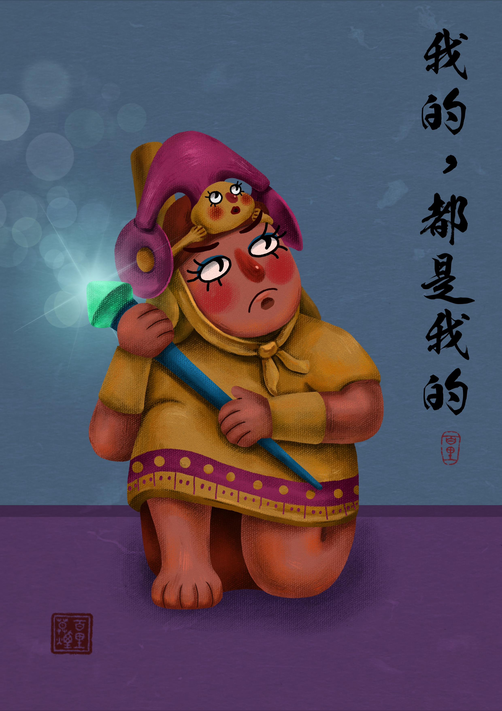
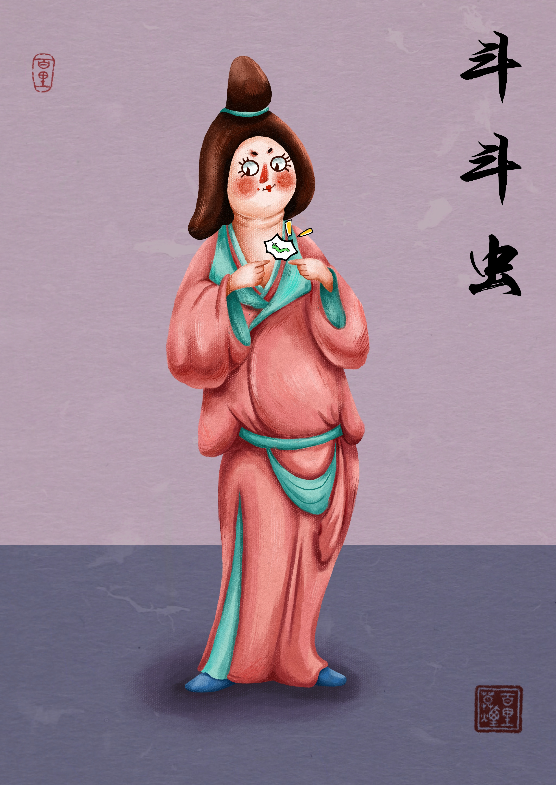
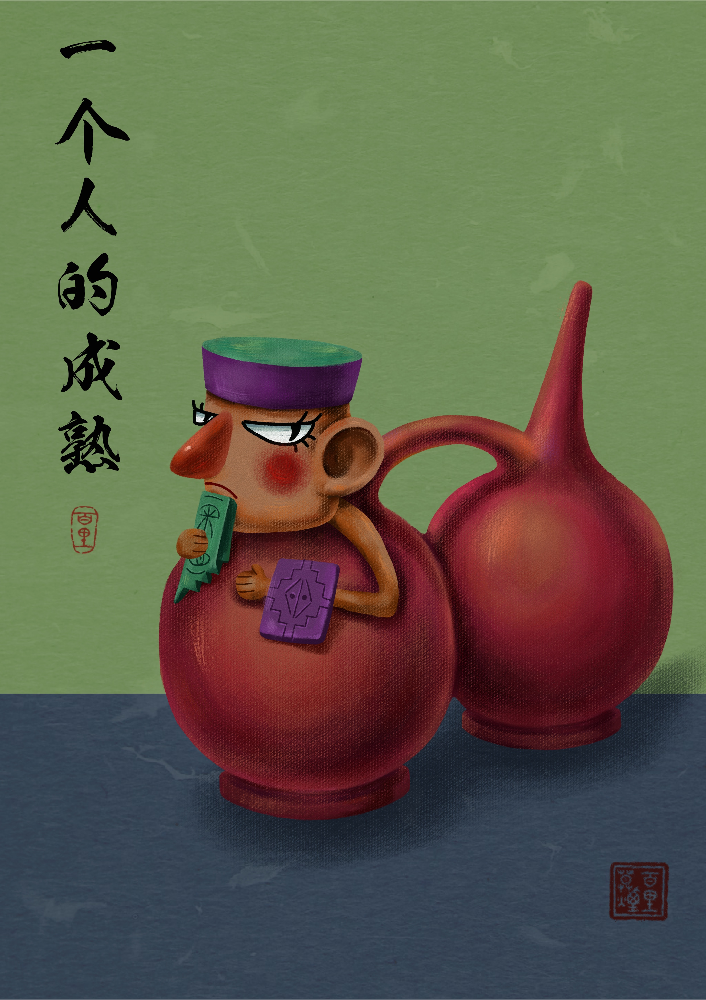
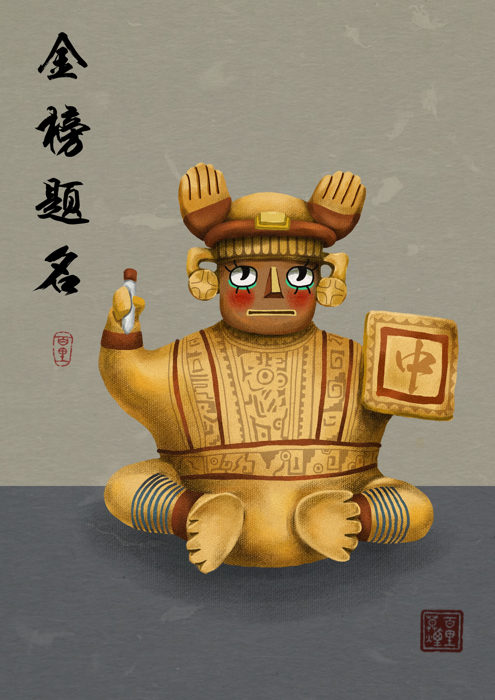
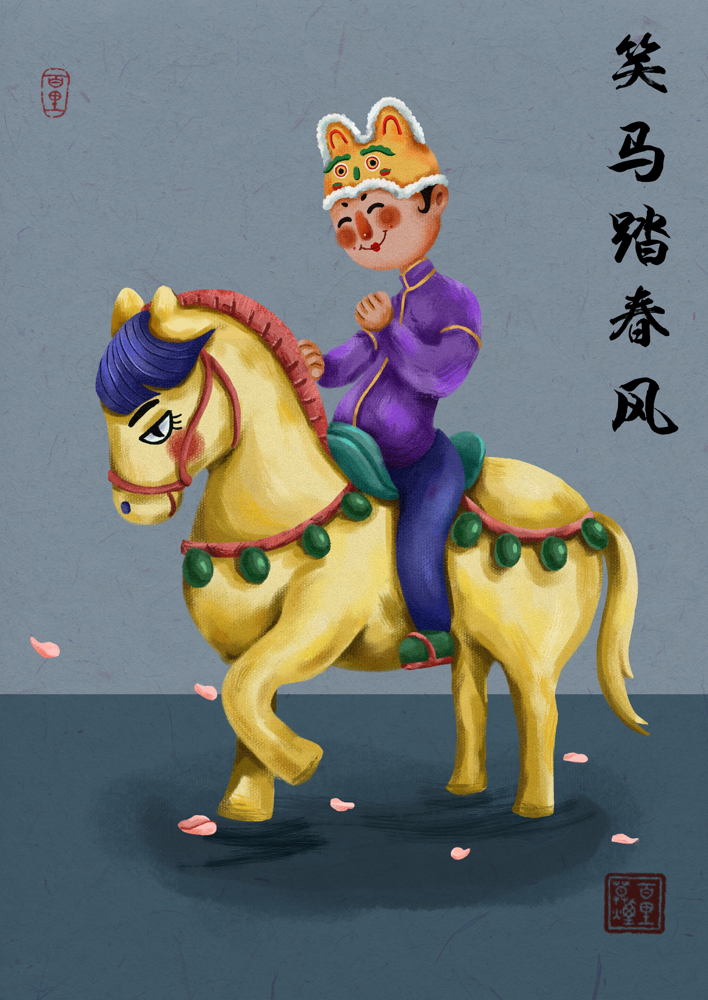
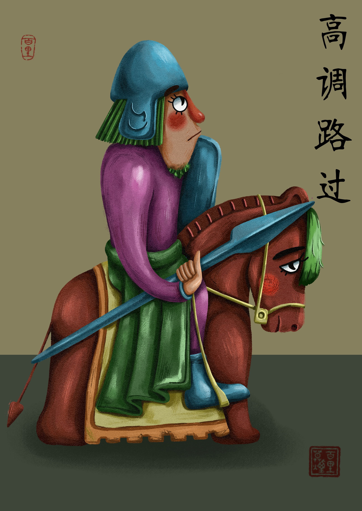
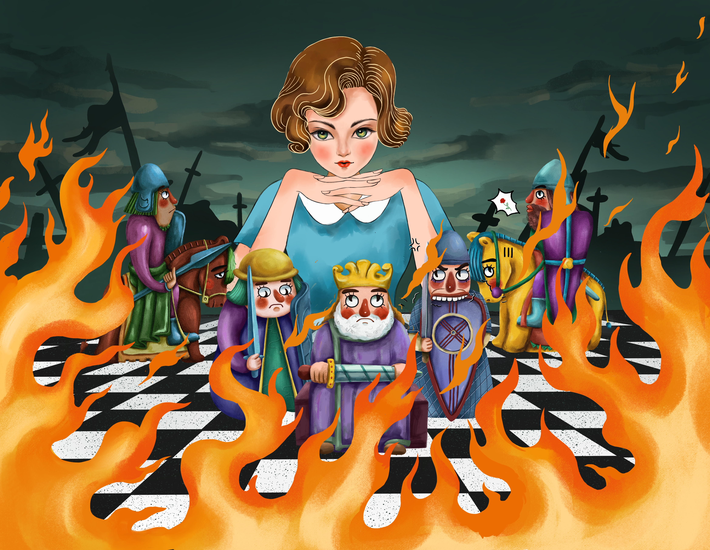

PERU / NAZCA
南美洲秘鲁纳斯卡文明坐陶瓶
以纳斯卡文明陶瓶为原型，保留陶器的坐姿与面部特征，加入当代的情绪表达。
SERIES / HISTORICAL VOICES
这些插画的原型都是世界各地的文物。我把古老器物、陶俑、棋子和骑马俑重新放进当代语境，让它们用现代语言、表情包式情绪和一点幽默感，继续说话。
PERU / NAZCA
以纳斯卡文明陶瓶为原型，保留陶器的坐姿与面部特征，加入当代的情绪表达。

GUATEMALA
以中美洲文物造型为灵感，把古代器物转译成一句直接又可爱的现代拒绝。

PERU / WARRIOR
以秘鲁战士陶瓶为原型，放大头饰、眼神和手持器物，让文物角色拥有自己的宣言。

AURORA MUSEUM
以彩绘陶仕女俑为原型，把古代人物的服饰、体态和当下网络语气放在同一个画面中。

INASO CULTURE
以连体陶瓶为原型，将器物的特殊结构转化成人物关系和自我成长的视觉隐喻。

PERU / CERAMIC FIGURE
以秘鲁战士陶瓶为原型，把古代造型和“金榜题名”的当代愿望并置。

NATIONAL MUSEUM
以骑马女陶俑为原型，保留人物与马的古代仪态，并加入轻松的春日表情。

LEWIS CHESSMEN
以刘易斯棋子为原型，将中世纪棋子的庄严感改写成“路过”的幽默瞬间。

CHESS / QUEEN
以棋盘、女王和骑士意象为线索，延展文物系列中关于权力、游戏和命运的想象。